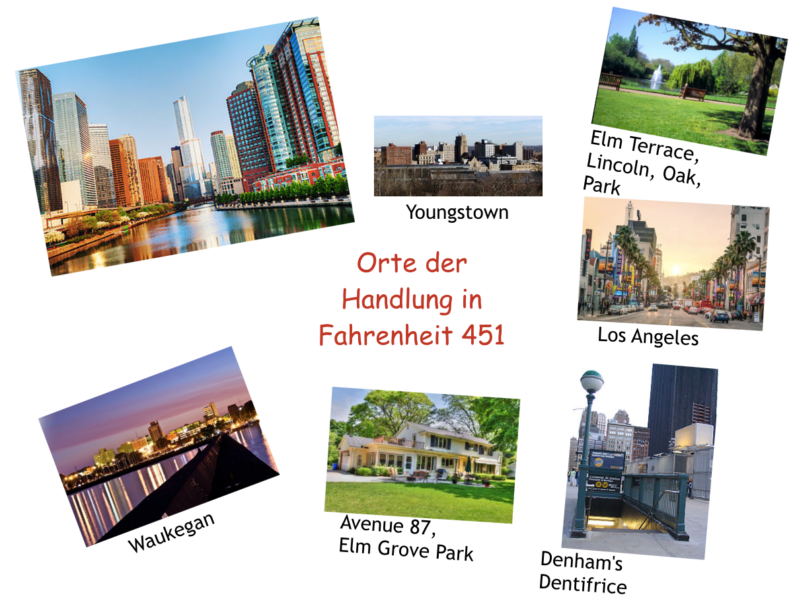
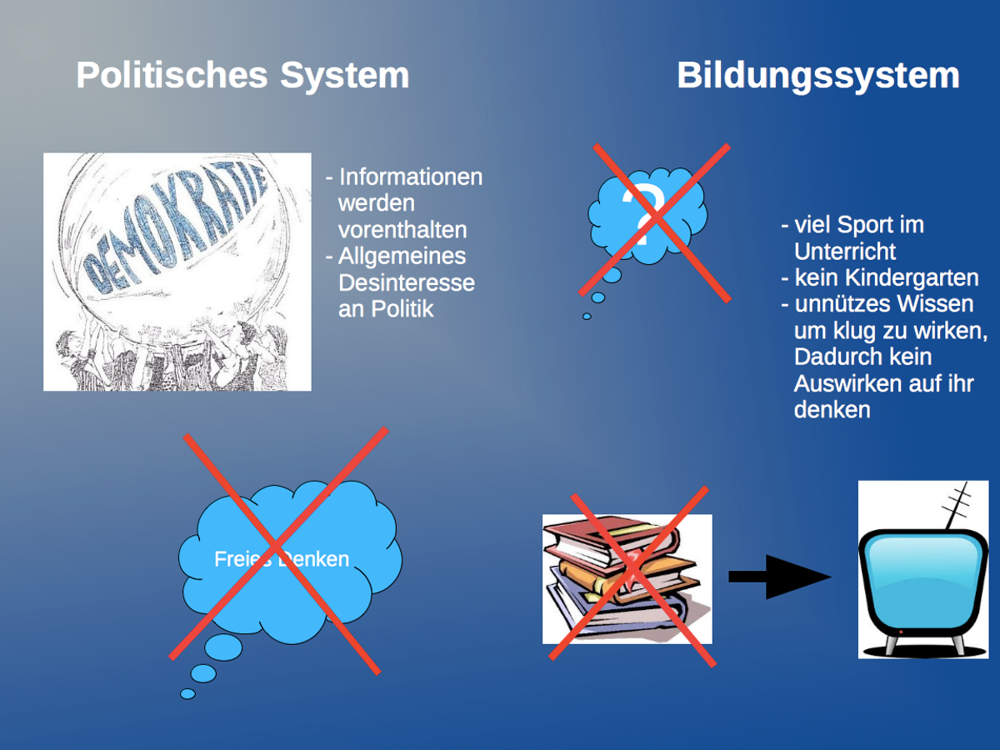
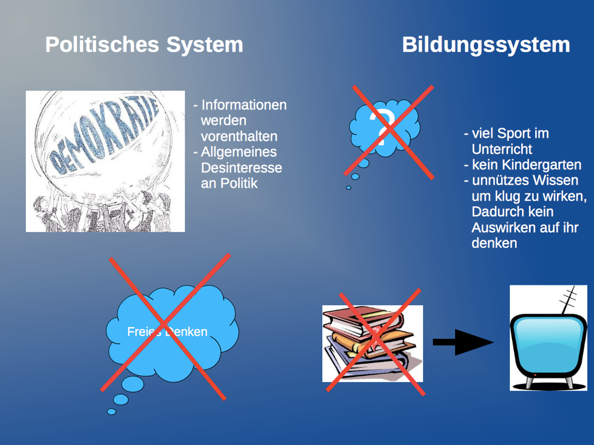

Zensur
Lemo: Die Ausstellung:"Entartete Kunst"
Europäische Geschichte Online: Zensur und Pressenfreihet
Über den Error 451
Entstehung:
Der HTTP Error 451 ersetzt den HTTP Error 404 auf Internetseiten die wegen Zensur oder Legalen Gründen aus dem Internet genommen wurden.Erstmals wurde der Error Code bei der IETF von dem ehemaligen Google Mitarbeiter Tim Bray im Juni 2012 eingereicht offiziel anerkannt wurde er am 17. Dezember 2015 am ende seines Vorschlags schrieb Bray ''Thanks also to Ray Bradbury'' eine Anspielung an dessen Roman Fahrenheit 451.
Nutzen:
Weil das Internet in unserem Alltag eine immer größere Rolle spielt gibt es unzählige gründe für das abschalten einer Website.Ein Gericht könnte zum Beispiel die Schließung einer 3D Druck Vorlagen Seite beantragen, weil sie Patente, Warenzeichen oder Copyright verletzt.Eine Regierungsbehörde könnte sich dazu entschieden Torrent oder Streaming Seiten zu schließen oder das Europäische ''right to be forgotten'' könnte ausgeweitet werden was viele Webseiten betreffen könnte.Egal aus welchem Grund Website geschlossen werden in einem Land in dem die Bürger wenigstens etwas Freiheit haben, müssen die Leute wissen wann die Regierung den Zugriff zu Informationen zensiert. Dieses Problem wird durch den Error 451 behoben.
[Ian Paul, PCWorld]
Cover

 
